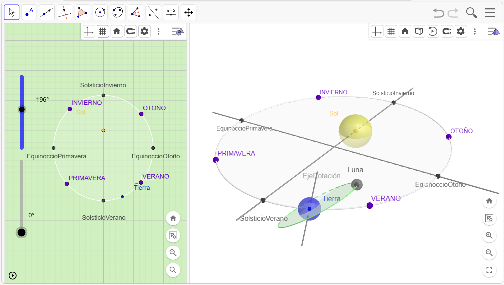

EXPLORACIÓN DE LA CAPA 2 DEL MODELO:
Ahora que ya dominas el movimiento básico, vamos a descubrir por qué tenemos diferentes estaciones a lo largo del año.
Activa la Capa 2 y explora, puedes activar o desactivar desde el panel de la izquierda haciendo clic sobre los círculos que indican el color del objeto (te recomendamos seguirlas en orden para no saturar la vista).

Mira el eje de la Tierra. ¿Ves que no está totalmente vertical? Está inclinado respecto al plano de la órbita de traslación. Esta inclinación es la causa directa de las estaciones del año, ya que determina cómo inciden los rayos del Sol y la duración de los días en cada hemisferio.
Teniendo esto en cuenta intenta realizar o responder las siguientes cuestiones:
1. Mueve el deslizador de la Tierra para colocarla en VERANO. ¿Ves que, cuando estamos en verano, el Polo Norte siempre recibe luz?
2. Mueve el deslizador de la Tierra para colocarla Tierra en INVIERNO. ¿Ves cómo el Polo Norte se queda “escondido” del Sol, aunque la Tierra gire?
3. Observa la distancia al Sol en verano y en invierno. ¿Realmente hace calor porque estamos más cerca del Sol, o es porque el eje inclinado hace que los rayos de luz nos golpeen más directamente?
Nota: Aunque la Tierra se desplace por toda su órbita alrededor del Sol, el eje no se va moviendo de un lado a otro, siempre se queda “congelado” apuntando hacia el mismo punto lejano en el espacio (la Estrella Polar). Si el eje fuera bailando o cambiando de dirección, las estaciones serían un caos. Gracias a que se mantiene fijo y constante, tenemos un ciclo de estaciones que se repite exactamente igual cada año.